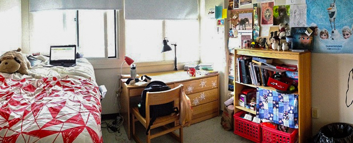

Designed by world-famous Spanish architect Josep Lluis Sera and completed in 1982, Next House sports architecture themed around sun and community with colorful living spaces, a bright dining hall, and a beautiful courtyard.
Next House is a co-ed dorm with four floors to house over 350 students. Each floor is divided into an east and west side, giving Next eight wings each with their own distinct atmosphere and culture.
Typically, students room with those of the same gender. However, gender-inclusive housing (GIH) is a policy that provides MIT students with the option to live in residences with whomever they choose, regardless of biological sex, gender, or gender identity. Any resident is welcome to participate in GIH. For more information about GIH, please visit the Housing website. If you do not opt in to GIH, you are guaranteed to live with someone of the same gender.
Next House has singles, doubles and triples. While rooms vary in shape and size, all of the rooms in Next House are large compared to some other undergraduate dorms. On average, singles are about 125 square feet, and doubles are about twice that size. The largest rooms in Next House are the solar singles and doubles, named for their floor-to-ceiling windows. Most freshmen will live in doubles and triples, although there are usually a few singles open in the Fall.
A typical double

A typical single
Each resident will be provided with a bed, desk, bookcase, dresser, trash can, Ethernet connection, cable connection, and closet space in their room. Rooms on the river-side of the dorm have gorgeous views of the Charles River and Boston. Rooms on the opposite side have a great view of the athletic fields and Simmons Hall.
Each wing has a large lounge with floor-to-ceiling windows overlooking the Charles River and Boston, a TV connected to MIT cable, large whiteboards, and counter space for cooking. In addition to the large lounge, each wing has smaller lounges, including bike lounges for bike storage, and mini-lounges for hanging out and studying.
Bathrooms in Next House are also co-ed, although the bathrooms are private with separate locking doors for each shower and toilet. Each bathroom has two shower rooms, two toilet rooms, a large counter area with two sinks, and cubby holes for residents to store their bathroom items (i.e., shower caddy, toothbrush, contact lens, etc.). Generally about seven to ten people share a bathroom, and since people shower at all hours of the day (literally!) there's usually no trouble finding an open bathroom.
Rooms are chosen via the aptly-named housing lottery. Selection of a room is based on a random lottery number. The upperclassmen housing lottery is held in the Spring. Each class has a separate lottery, starting with the incoming senior class. The freshmen housing lottery is held during orientation in the Fall.
If you are considering a double or triple for your freshmen year, you will need to find a prospective roommate or roommates during your week of orientation before you move into your permanent rooming assignment.